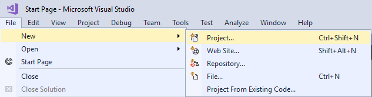
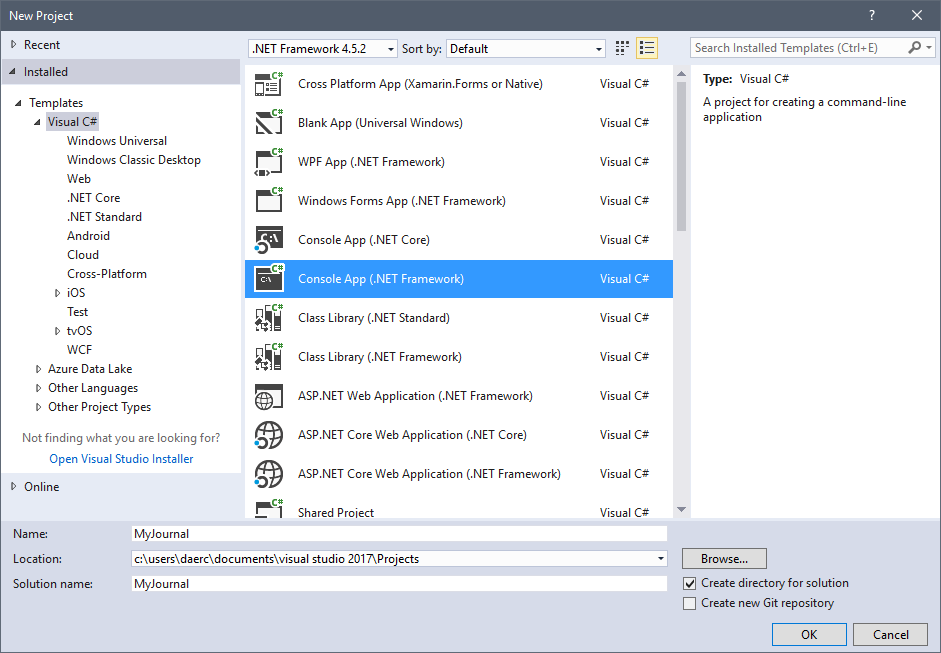

Duration
10 minutes
Lab goals
In this exercise, you will begin to create a console based journal application. You will create a class to represent the journal itself and display a journal message to the console. If you use the lab instructions, your output will look something like:

To complete this exercise, you will perform the following steps:
- Create a new console application called MyJournal.
-
Create a
Journalclass that contains a public string for the message, a private string for the password, and a private bool to idicate if the journal is locked. - Display the journal message into the console.
Steps
Create a new console application
You are going to start by creating a new console application called MyJournal. You may use Visual Studio for Windows, or Visual Studio for Mac to do this.
- Launch Visual Studio.
- Navigate to File -> New -> Project 
- Under the Visual C# section, select Console App(.NET Framework) and name the Project MyJournal. 
- Click OK.
Create the Journal class
You are now going to create the Journal class. The Journal class is responsible for managing the overall state of the journal.
For example, you will store the password to unlock the journal here.
-
Create a new class called
Journal. You can create a new class by right clicking on your project and navigating to Add -> Class. -
Create the following fields in your class:
- A public string to store a startup message called
JournalMessage. Initialize this field to a message of your choice. - A private string to store the journal password called
journalPassword. Initialize this field to a password of your choice. - A private bool to indicate if the journal is unlocked called
journalUnlocked. Initialize this field tofalse.
- A public string to store a startup message called
Create an instance of the Journal class
You just created a class to represent a journal, however, a class is only a blueprint. You will now create an actual journal instance (object) by using the new keyword.
- Switch to Program.cs.
-
Inside the
Mainmethod create a variable of typeJournalcalledmyJournal. You should instantiate this by using thenewkeyword. - Display the journal's message into the console.
- Run the application and verify that the message was displayed.
Summary
In this lab exercise, you created a new console application and began building the structure for the journal class.